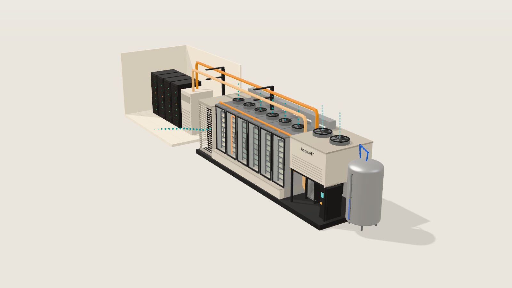
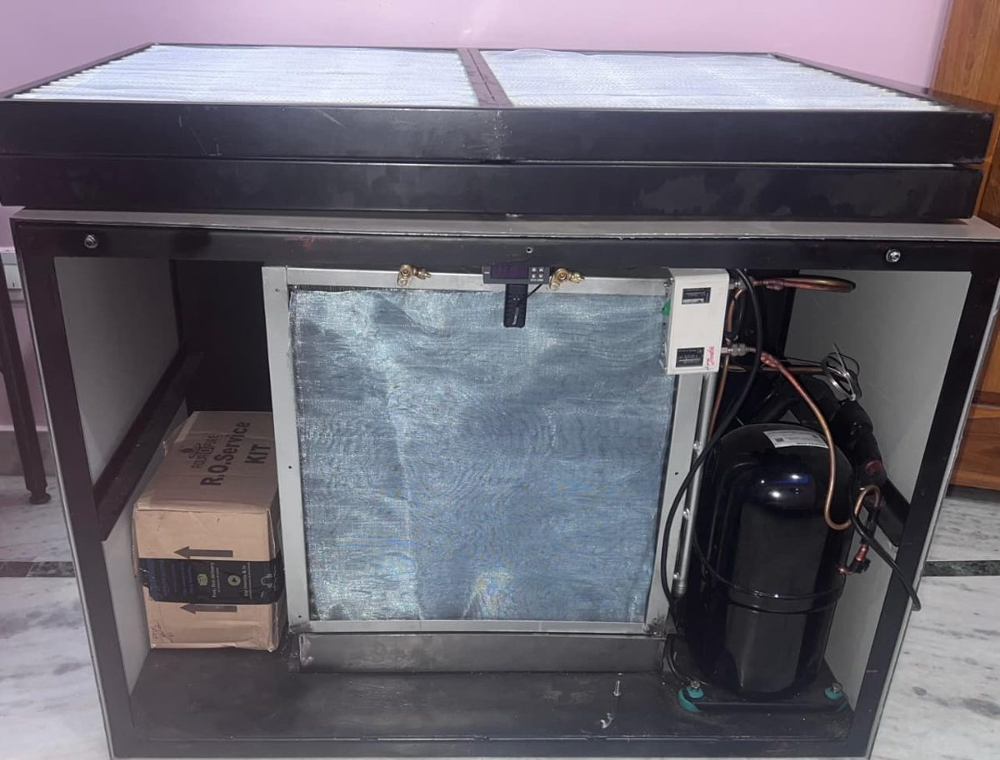

45,600 L
of water a day used by one 1 MW data hall that cools with towers
PublishedEESI, June 2025 · average 1.9 L per kWh

Pre-seed · Hyderabad, India
AI data centres dump heat all day, often by evaporating water. We use that heat to pull drinking water out of the air, and to cut the water those buildings evaporate.
Scroll to take the machine apart
01 · The heat
Hot liquid from the AI hall's cooling loop runs to a plate heat exchanger. The servers' own loop is never touched, and a bypass keeps site cooling running if anything fails. Our side gets water at about 50 °C.
02 · The air
Fans pull outdoor air through louvres and two filter stages. A duct under the chambers spreads it to each one.
03 · Catch and release
Each chamber holds trays of a salt-loaded gel. For 100 minutes it soaks up moisture from the air. Then the dampers close, hot water runs through the tubes, and for 20 minutes the gel lets the water go as vapour. Six chambers take turns, so one is always releasing.
04 · The condenser
The vapour flows to a condenser, cools and drips out as liquid water. In a Hyderabad summer this is the hardest step, so it is the one we test first.
05 · Clean water
The water passes a sediment filter, activated carbon and UV-C light, then fills a stainless steel tank. Every batch will be tested against India's drinking-water standard, IS 10500, and for lithium.
Where we are
The gel comes from published lab work (UT Austin, PNAS 2023). Before we build this module, we are running the gel through 1,000 catch-and-release cycles on our own bench rigs. That is Gate 1.
IIThe problem
45,600 L
of water a day used by one 1 MW data hall that cools with towers
PublishedEESI, June 2025 · average 1.9 L per kWh
7+ GW
India's data-centre load by 2030, up from 1.8 GW today
PublishedSavills India via Indian Infrastructure, July 2026
3.3×
more water tankers booked in Hyderabad, Oct 2026 vs Oct 2025
PublishedTelangana Today, 15 Oct 2026
India's fastest-growing buildings are going up in cities that already buy water by the tanker.
IIIThe heat
Almost every watt a chip uses ends up as heat. Most data centres throw it away, often by evaporating water in cooling towers.
In the lab, the gel gives up its water at 40 °C, but that test used a 25 °C condenser. A condenser in a Hyderabad summer runs at 35 to 45 °C. So we design for heat at 55 to 75 °C.
Warm-water liquid cooling gets close to that on its own. Cooler loops need a small heat pump to lift them, and that costs electricity. Our first targets are hybrid halls: liquid-cooled GPUs plus cooling towers.
Sources: Guan et al., PNAS 2023; ASHRAE liquid-cooling classes. The 55–75 °C band is our steam-table estimate, not yet measured.
IVThe module · AW-1000 concept
It connects to the site's facility-water loop through a plate heat exchanger, never to the servers' own loop. A bypass keeps site cooling running if anything fails.
Every model number here comes from our open simulator. It runs the module through Hyderabad's weather month by month. Change the heat, the condenser or the amount of gel and every figure follows.
Open the simulatorVThe economics
Honest numbers first. Cost of made water per 1,000 litres in Hyderabad. These are model estimates, not measurements.
Plain made water cannot beat a tanker in Hyderabad today. So we sell first where water costs more than ₹1,000 per 1,000 litres, or cannot be bought legally at all.
Going from 50 °C to 65 °C heat gives about 67% more water from the same gel.
ModelAbout 2.1 times more water a year, and it fixes the summer drop. It costs more electricity and capital.
ModelA tower on the condenser evaporates about as much water as the module makes. We use dry coolers or a heat pump.
ModelFans are the biggest unknown on the electricity bill. Low-resistance gel beds and EC fans, metered on the bench rig.
TargetAt ₹800 per kg, replaced every 3 years, the gel is a small part of the cost.
ModelSites with no legal water source, water-credit buyers, drinking water, and high-cost regions like the Gulf.
TargetTwo models, one open question. Our engineering estimate puts electricity at 40–60 Wh per litre. Our simulator, which counts fan power at full airflow, gives 170–260. The bench rig measures it on every cycle. Our target is under 50, measured.
Check it yourselfVIProof so far

210 L
of water made in two field tests in Telangana
Measured
WHO + BIS
drinking-water limits met in lab tests
Measured
₹75,000
paid by our first customer, May 2026
Measured
₹26 lakh
in grants we never pay back. No equity raised.
Measured
We started in Hyderabad in November 2023. Fifteen programmes, grants and prizes have helped us since.
VIIRoadmap
Each step happens only if the one before it passes.
VIIISupporters
These are grants, prizes and programmes, not investors. We have raised no equity.


Logos belong to their owners. They show programmes we took part in and do not mean endorsement.
IXTeam
Founder & CEO
Founded BiGeo (rural routing, 2023–25). Telangana State Innovation Cell coordinator, 2024. beVisioneers Fellow 2025.
Biotech & research
Microbiology and DNA testing. Checks that the water is safe to drink.

R&D engineer
Builds our machines and tests them until they work.

Co-founder, business development
Computer engineer. Finds customers and signs them up.
Advisors: Prof. Soumyajit Roy (IISER Kolkata) · Vijender Mogili (Bala Vikasa) · RYLT (manufacturing partner).
Hiring with this round: a sorbent chemist and a data-centre cooling advisor.
XWork with us
We are raising a $750K pre-seed round and looking for our first data-centre pilot partner: a paid 6-month pilot with pass/fail terms agreed up front.
InvestorsPre-seed, $750K
Data centres6-month paid pilot
ResearchersGel and field data